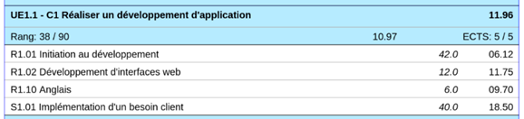
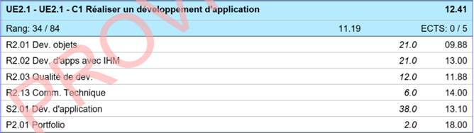
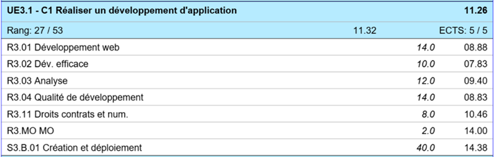

0Non Acquis3En
Cours6Acquis10
Analyse :
- Ce qui m’a plu dans cette compétence, c’est de pourvoir apprendre de nouveaux
langages de programmation mais aussi d’apprendre comment les mettre en actions
dans des projets de situation d’apprentissage et d’évaluation (SAE), pour pouvoir
mieux les comprendre et les mettre en place.
- Cependant, ce qui m’a déplus dans cette compétence c’est pendant le projet du
premier semestre car je me suis retrouvé dans un groupe où une personne ne
travaillait pas beaucoup donc ça m’a un peu déçu de la compétence au début mais
par la suite ça a été mieux.
- La difficulté c’est d’être régulier dans l’apprentissage de la compétence afin de ne pas
prendre du retard.
Preuves :


